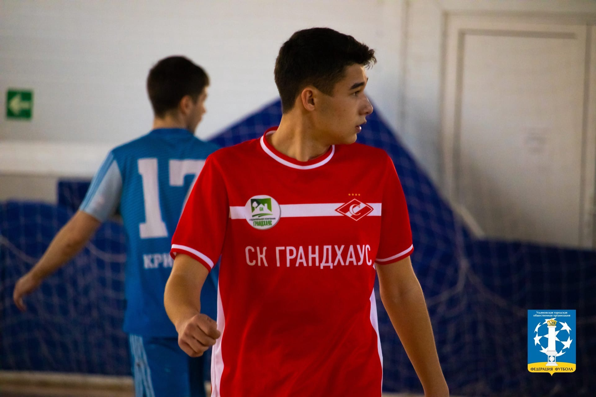

После того как я поступил в политех, я закончил с профессиональным футболом и теперь играю в свое удовольствие за мини-футбольную команду «Спартак-грандхаус». Из большого футбола тяжело переходить на маленькую площадку , поэтому мне почти заново приходиломь учиться играть. Мы выступаем на разных городских и областных турнирах , играем в суперлиге-самом престижном чемпионате города Ульяновска, также ездили на чемпионат россии среди мини-футбольных команд. Однако кроме футбола есть и другие виды спорта в которые я неплохо играю например: Хоккей , баскетбол , волейбол . Я не люблю проигрывать,поэтому любая игра вызывает у меня азарт.
